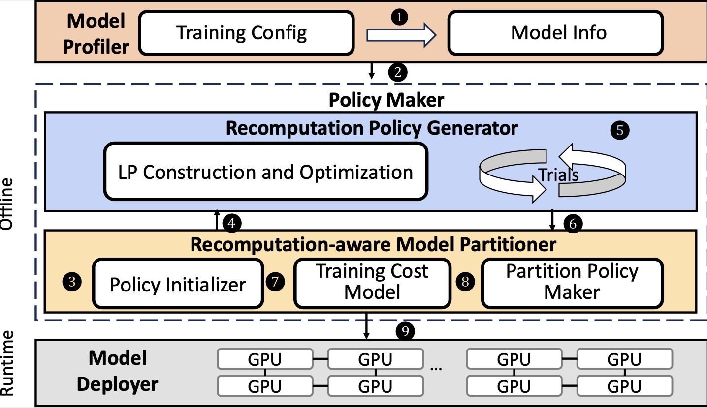
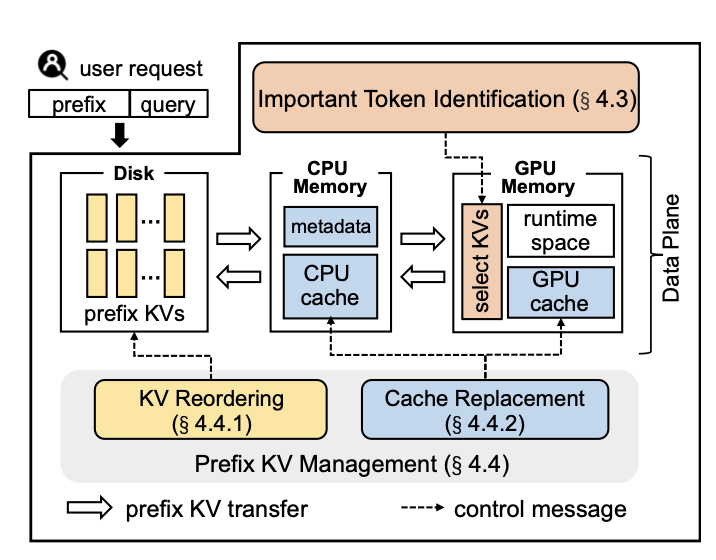

|
陈平 (Ping Chen)
I am working toward a Ph.D. with the College of Computer Science and Technology, Zhejiang University, China, where I am advised by Prof. Shuibing He and Prof. Xian-He Sun.
Up to now, I have published several papers in top journals and conferences in computer systems, such as TC, TPDS, Cluster, and ICPP. Besides, At Zhejiang University, I led a team of over ten members, collaborating closely to develop innovative and practical AI systems. We try to enhance the training, inference, and scheduling efficiency for computer vision, large language models, recommendation systems, and diffusion models.
In my leisure time, I do various types of workout to keep energetic, such as gym (5+ years).
I like playing basketball (12+ years). As a member of the college basketball team, I actively participated in numerous competitions and secured several medals. I also enjoy sipping wine during my leisure time with my lab mates. :)
Join me if you're interested.
Email /
Scholar /
ZhiHu
|
|
Main Research
My research focuses on Intelligent Computing, Memory Management for AI systems. I am interested in optimizing the AI frameworks by exploring the new characteristics of applications (e.g., CV, NLP, LLM, and Recommendation systems) and new memory/storage devices (e.g., GPU HBM, host main memory, and non-volatile main memory).
|
|
|
Accelerating Tensor Swapping in GPUs With Self-Tuning Compression
Ping Chen, Shuibing He*, Xuechen Zhang, Shuaiben Chen, Peiyi Hong, Yanlong Yin, Xian-He Sun
IEEE Transactions on Parallel and Distributed Systems (TPDS, CCF-A), 2022
Paper / Slides
We propose a self-tuning tensor compression framework, named CSWAP+, for improving the virtual memory management of GPUs. It uses GPUs for (de)compression directly and thus has high portability and is minimally dependent on GPU architecture features. Furthermore, it only applies compression on tensors that are deemed to be cost-effective considering their compression ratio, size, and the characteristics of compression algorithms at runtime. Finally, to adapt to DNN models with dense tensors, it also supports cost-effective lossy compression for dense tensors with nearly no model training accuracy degradation.
|
|
|
HOME: A Holistic GPU Memory Management Framework for Deep Learning
Shuibing He (Advisor), Ping Chen*, Shuaiben Chen, Zheng Li, Siling Yang, Weijian Chen, Lidan Shou
IEEE Transactions on Computers (TC, CCF-A), 2023
Paper / Slides
We propose HOlistic MEmory management (HOME), a new framework for performing tensor placements in large DNN training when GPU memory space is not enough. HOME combines tensor swapping with tensor recomputation to reduce GPU memory footprint. Different from existing work that only considers partial DNN model information, HOME takes the holistic DNN model information into account in tensor placement decisions.
|
|
|
CSWAP: A Self-Tuning Compression Framework for Accelerating Tensor Swapping in GPUs
Ping Chen, Shuibing He*, Xuechen Zhang, Shuaiben Chen, Peiyi Hong, Yanlong Yin, Xian-He Sun, Gang Chen
2021 IEEE International Conference on Cluster Computing (CLUSTER, CCF-B), 2021
Paper / Slides
We propose a self-tuning tensor compression framework, named CSWAP, for improving the virtual memory management of GPUs. It has high portability and is minimally dependent on GPU architecture features. Furthermore, its runtime only applies compression on tensors that are deemed to be cost-effective considering their sparsity and size and the characteristics of com- pression algorithms. Finally, our framework is fully automated and can customize the compression policy for different neural network architectures and GPU architectures.
|
|

|
Optimizing Large Model Training through Overlapped Activation Recomputation
Ping Chen, Wenjie Zhang, Shuibing He*, Yingjie Gu, Zhuwei Peng, Kexin Huang, Xuan Zhan, Weijian Chen, Yi Zheng, Zhefeng Wang, Yanlong Yin, Gang Chen
arXiv, 2024
Paper / Slides
We design a new recomputation framework, Lynx, to reduce the overhead by overlapping the recomputation with communication occurring in training pipelines. It consists of an optimal scheduling algorithm (OPT) and a heuristic-based scheduling algorithm (HEU). OPT achieves a global optimum but suffers from a long search time. HEU was designed based on our observation that there are identical structures in large DNN models so that we can apply the same scheduling policy to all identical structures.
|
Collaborated Research
I am eager to contribute to collaborative projects across various fields, including Processing in Memory (PIM), diffusion models, and job scheduling on cloud platforms.
|
|

|
IMPRESS: An Importance-Informed Multi-Tier Prefix KV Storage System for Large Language Model Inference
Weijian Chen, Shuibing He, Haoyang Qu, Ruidong Zhang, Siling Yang, Ping Chen, Yi Zheng, Baoxing Huai, and Gang Chen
Proceedings of the 23rd USENIX Conference on File and Storage Technologies (FAST, CCF-A), 2025
Paper / Slides
In this paper, we propose IMPRESS, an importance-informed multi-tier prefix KV storage system to reduce I/O delay for LLM inference by only loading important prefix KVs. IMPRESS first leverages the insight that there is significant similarity in important token index sets across attention heads and introduces an I/O-efficient important KV identification algorithm. It then optimizes prefix KV storage and caching through importance-informed KV management, reducing TTFT during model inference. Our experimental results show that IMPRESS can reduce TTFT by up to 2.8× compared to state-of-the-art systems, while maintaining com- parable inference accuracy.
|
|
|
AUTOHET: An Automated Heterogeneous ReRAM-Based Accelerator for DNN Inference
Tong Wu, Shuibing He*, Jianxin Zhu, Weijian Chen, Siling Yang, Ping Chen, Yanlong Yin, Xuechen Zhang, Xian-He Sun, Gang Chen
International Conference on Parallel Processing (ICPP, CCF-B), 2024
Paper / Slides
We propose AutoHet, an automated heterogeneous ReRAM-based accelerator with varied-size crossbars for different DNN layers. To achieve both high crossbar utilization and energy efficiency, AutoHet uses a reinforcement learning algorithm to automatically determine the proper crossbar configuration for each DNN layer. Additionally, AutoHet introduces rectangle crossbars and a tile-shared crossbar allocation scheme to reduce crossbar wastage and energy consumption.
|
|
Patents for DNN I/O Optimization
Patents for GPU Memory Optimization
Patents for Checkpointing
Patents for Scheduling
5 Chinese Software Copyright
|
|
National Scholarship, 2023-2024
National Scholarship, 2017-2018
The 2nd National College Student Information Storage Technology Competition, Silver Award, 2024
China International College Students' Innovation Competition, Silver Award, 2024
National Encouragement Scholarship, 2016-2017
National Encouragement Scholarship, 2017-2018
Outstanding Graduate, 2019
Outstanding Graduation Design, 2019
Others...
|
|
{kind=link}